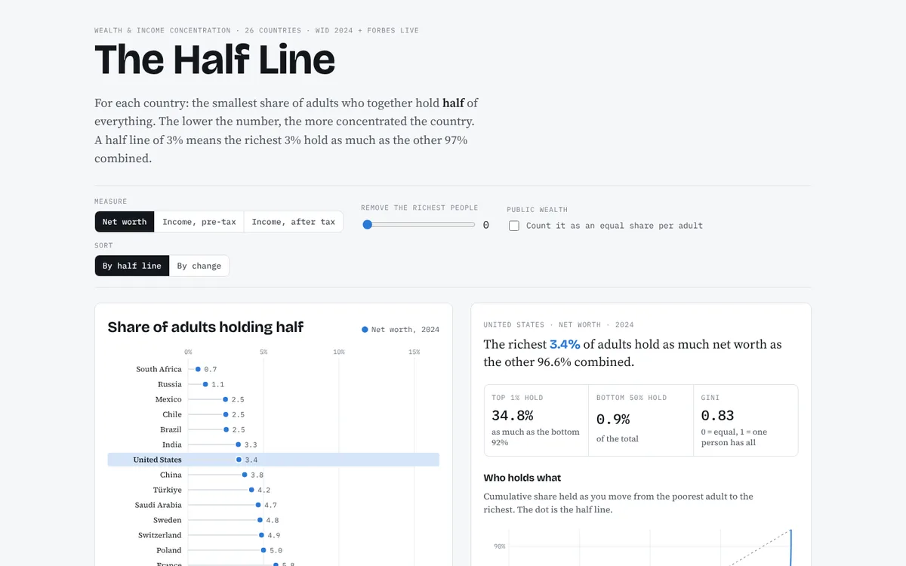
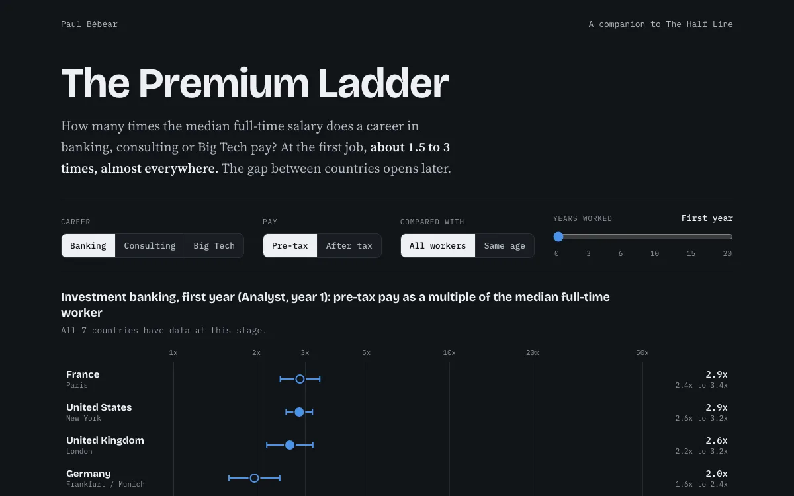
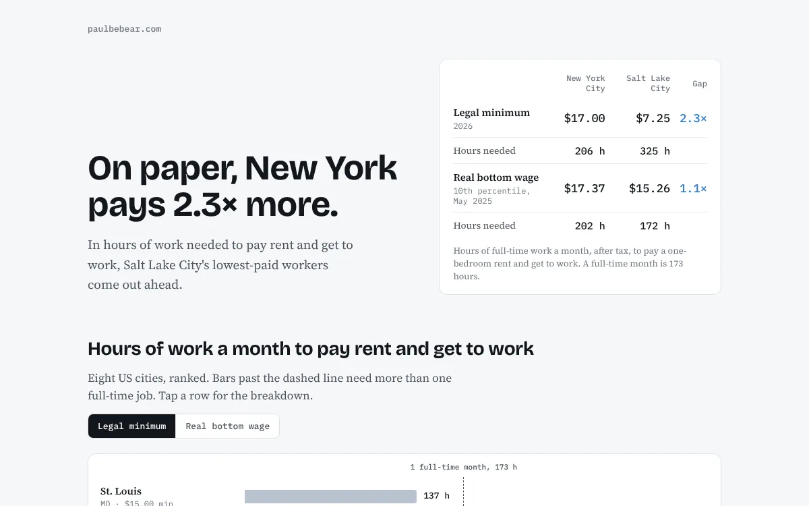
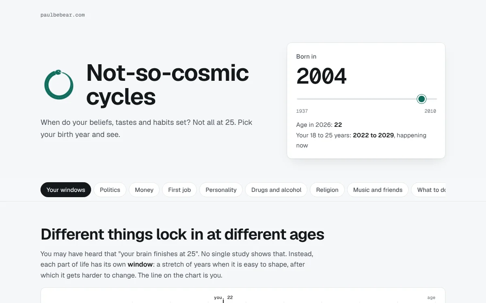

Explore
5Tools for poking around a subject: spin a globe, drag a slider, swap countries and see what changes.
Atlas Through Time
An interactive globe of borders, wars and nations across 5,000 years.

The Half Line
How few people hold half of everything, in 26 countries.

The Premium Ladder
What banking, consulting and Big Tech pay against the median salary, in seven countries.

The Bottom Wage
Minimum wages against the hours of work rent really costs, in eight US cities.

Not-so-cosmic cycles
Pick a birth year and see when your beliefs, tastes and habits set.